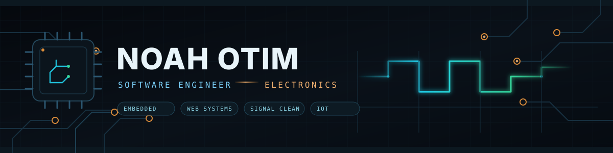
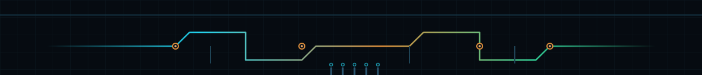

I work where code meets current — software systems on one side, circuits and sensors on the other. Good engineering in both looks the same: remove friction, respect the signal, and ship consistently.
A sensor reading is only useful once it reaches a screen and a decision.



